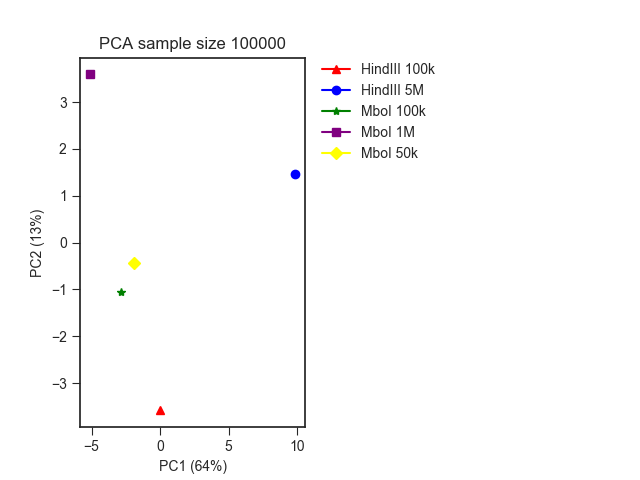

PCA analysis¶
When working with multiple Hi-C libraries, it is often useful to assess the variability between replicates and samples from different conditions. This can provide valuable information about potential experimental biases and whether samples from different replicates can be safely merged.
usage: fanc pca [-h] [-p PLOT] [-s SAMPLE_SIZE] [--inter-chromosomal]
[-r REGION] [-e EXPECTED_FILTER] [-b BACKGROUND_FILTER]
[--min-distance MIN_DISTANCE] [--max-distance MAX_DISTANCE]
[-n NAMES [NAMES ...]] [--strategy STRATEGY]
[-c COLORS [COLORS ...]] [-m MARKERS [MARKERS ...]]
[-v EIGENVECTORS EIGENVECTORS] [-Z] [-S] [-f] [-tmp]
input [input ...] output
Positional Arguments¶
- input
Input Hic files
- output
Output file with PCA results.
Named Arguments¶
- -p, --plot
Output plot. Path to PDF file where the PCA plot will be saved.
- -s, --sample-size
Sample size for contacts to do the PCA on.Default: 50000
- --inter-chromosomal
Also include inter-chromosomal contacts in PCA. By default, only intra-schromosomal contacts are considered.
- -r, --region
Region to do PCA on. You could put a specific chromosome here, for example. By default, the whole genome is considered. Comma-separate multiple regions.
- -e, --expected-filter
Minimum fold-enrichment over expected value. Contacts with a strength lower than <b>*E(d), where d is the distance between two loci and E is the corresponding expected contact strength, are filtered out before PCA. Default: no filter.
- -b, --background-filter
Minimum fold-enrichment over average inter-chromosomal contacts. Default: no filter.
- --min-distance
Minimum distance of matrix bins in base pairs. You can use abbreviated formats such as 1mb, 10k, etc.
- --max-distance
Maximum distance of matrix bins in base pairs. You can use abbreviated formats such as 1mb, 10k, etc.
- -n, --names
Sample names for plot labelling.
- --strategy
Mechanism to select pairs from Hi-C matrix. Default: variance. Possible values are: variance (select contacts with the largest variance in strength across samples first), fold-change (select pairs with the largest fold-change across samples first), and passthrough (no preference on pairs).
- -c, --colors
Colors for plotting.
- -m, --markers
Markers for plotting. Follows Matplotlib marker definitions: http://matplotlib.org/api/markers_api.html
- -v, --eigenvectors
Which eigenvectors to plot. Default: 1 2
- -Z, --no-zeros
Ignore pixels with no contacts in any sample.
- -S, --no-scaling
Do not scale input matrices to the same number of valid pairs. Use this only if you are sure matrices are directly comparable.
- -f, --force-overwrite
- If the specified output file exists, it will be
overwritten without warning.
- -tmp, --work-in-tmp
Work in temporary directory
Example¶
As an example, we ran a PCA analysis on the 1mb resolution mESC Hi-C matrices from our Low-C paper using different restriction enzymes (MboI and HindIII), as well as different input cell numbers.
fanc pca -n "HindIII 100k" "HindIII 5M" "MboI 100k" "MboI 1M" "MboI 50k" \
-Z -s 100000 -r chr19 -p architecture/pca/lowc.pca.png \
architecture/other-hic/lowc_hindiii_100k_1mb.hic \
architecture/other-hic/lowc_hindiii_5M_1mb.hic \
architecture/other-hic/lowc_mboi_100k_1mb.hic \
architecture/other-hic/lowc_mboi_1M_1mb.hic \
architecture/other-hic/lowc_mboi_50k_1mb.hic \
architecture/pca/lowc.pca
The result looks like this, where you can clearly see the division between the different restriction enzymes:
Filters¶
By default, PCA is run on the whole genome. In the example above, we have restricted the
analysis to chromosome 19 using the -r chr19 argument. -Z instructs
fanc pca to use only non-zero matrix entries for the PCA - this can help mitigate
the effect of very weak contacts on the variability.
In the example, we are limiting the number of contacts used for the PCA to 100,000
using -s 100000. The type of contacts in the sample are chose according to the
--strategy option. By default, the contacts with the largest variability across
the genome are chosen, but you can also use --strategy fold-change to choose
contacts with the largest fold-change or --strategy passthrough to make no
prior selection of contacts.
If you only want to include contacts up to (or above a) a certain distance, you can
specify that distance using the --max-distance (or min-distance) option.
Finally, fanc pca offers two filters designed to remove uninformative contacts
before PCA. The first, --expected-filter <f>, removes all contacts in which all
samples have a signal below f x E(d), where E is the expected value function depending
on the distance d. The second, --background-filter <f> removes contacts in which
all samples have an f -fold enrichment over the expected inter-chromosomal contacts.